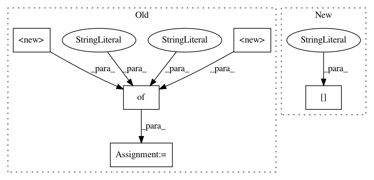

070259ba60b6623a3ff8db7b5f57c3972d0ff2b1,examples/mujoco_all_ray.py,,run_experiment,#Any#Any#,142
Before Change
preprocessing_layer_sizes = policy_params.get(
"preprocessing_layer_sizes")
if preprocessing_layer_sizes is not None:
nonlinearity = {
None: None,
"relu": tf.nn.relu,
"tanh": tf.nn.tanh
}[policy_params["preprocessing_output_nonlinearity"]]
observations_preprocessor = MLPPreprocessor(
env_spec=env.spec,
layer_sizes=preprocessing_layer_sizes,
After Change
env_params = variant["env_params"]
policy_params = variant["policy_params"]
preprocessor_params = variant["preprocessor_params"]
value_fn_params = variant["value_fn_params"]
algorithm_params = variant["algorithm_params"]
replay_pool_params = variant["replay_pool_params"]
sampler_params = variant["sampler_params"]
In pattern: SUPERPATTERN
Frequency: 3
Non-data size: 5
Instances
Project Name: rail-berkeley/softlearning
Commit Name: 070259ba60b6623a3ff8db7b5f57c3972d0ff2b1
Time: 2018-07-17
Author: kristian.hartikainen@gmail.com
File Name: examples/mujoco_all_ray.py
Class Name:
Method Name: run_experiment
Project Name: rail-berkeley/softlearning
Commit Name: cfe2fda04c7de2e0ef4df609455ccbe81678bb56
Time: 2018-07-17
Author: kristian.hartikainen@gmail.com
File Name: examples/mujoco_all_sac.py
Class Name:
Method Name: run_experiment
Project Name: rail-berkeley/softlearning
Commit Name: 1f6686d765052c874dcf28f8036acde742decd79
Time: 2019-04-26
Author: 31363575+Alacarter@users.noreply.github.com
File Name: softlearning/environments/utils.py
Class Name:
Method Name: